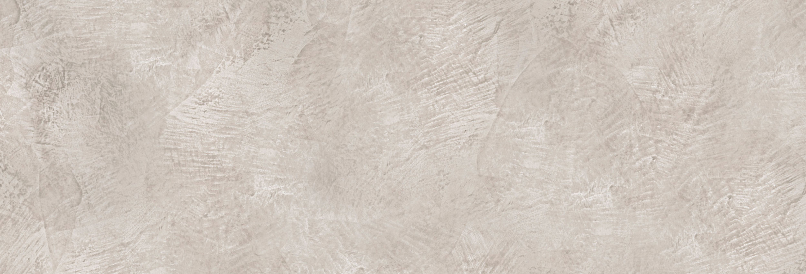
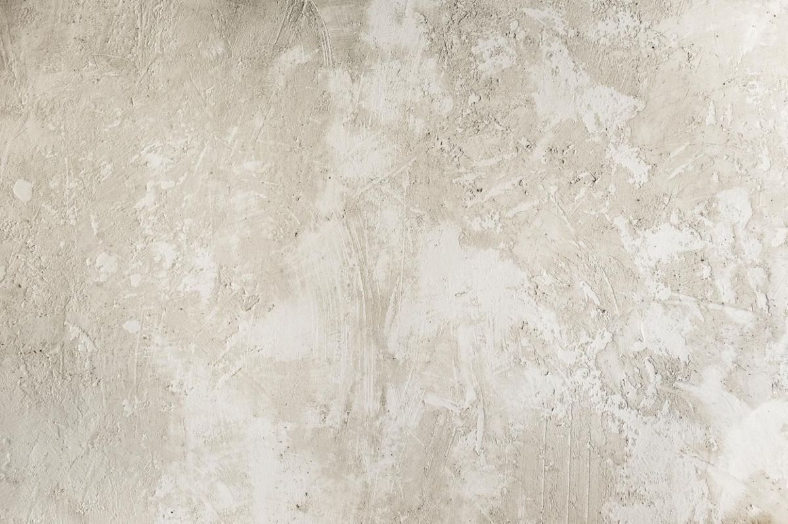
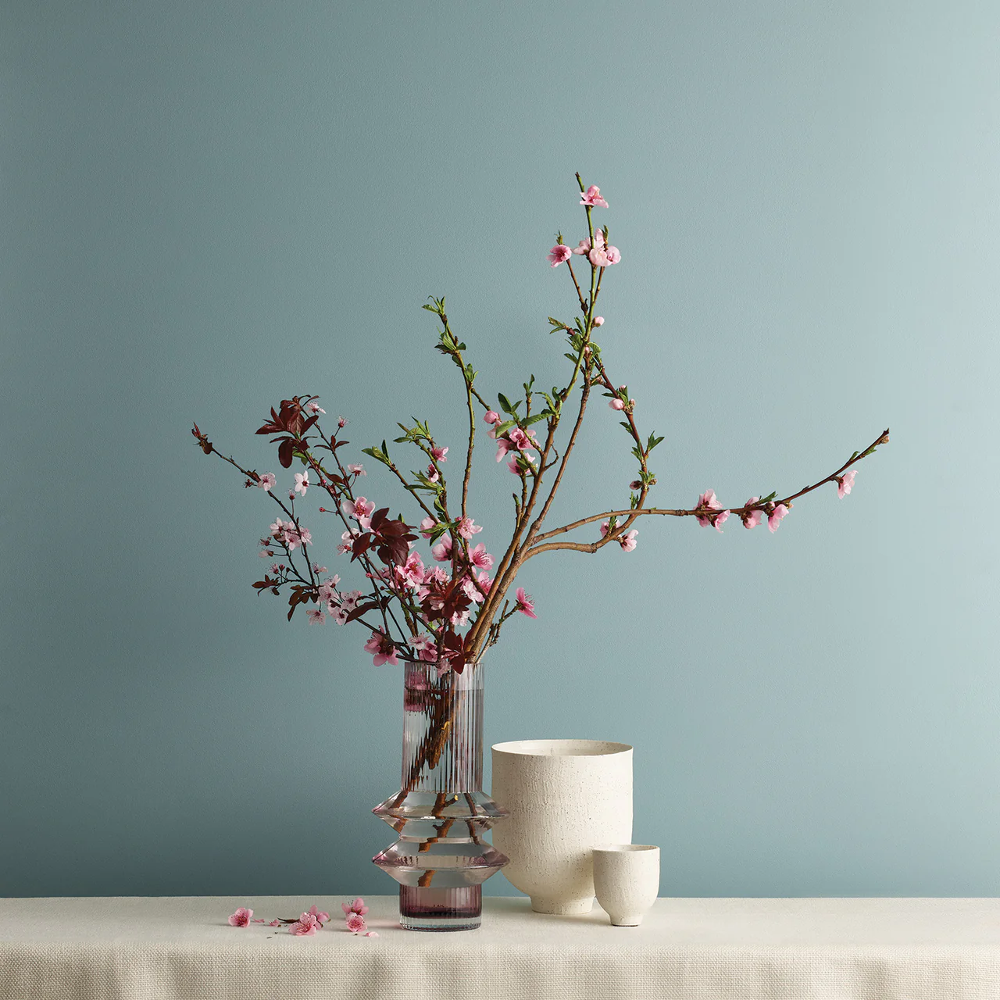
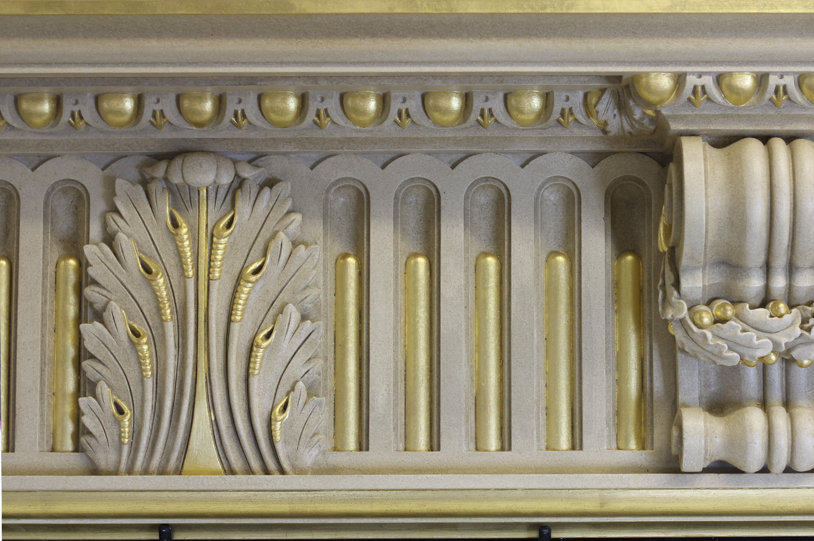
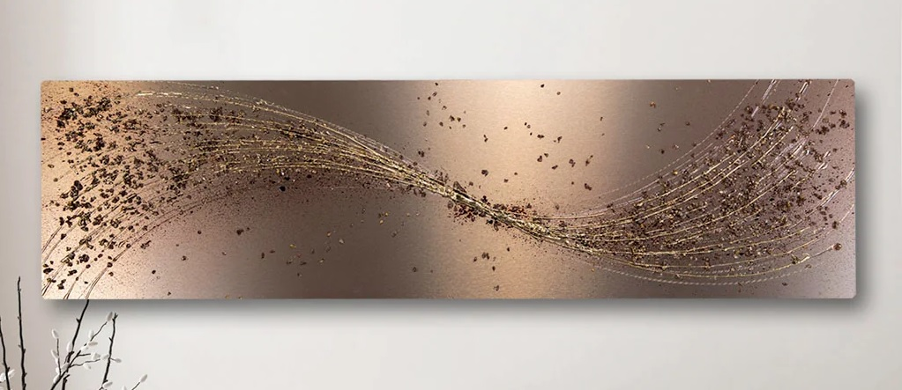

Venetian plaster
Venetian plaster is a luxurious wall and ceiling finish made from natural materials like marble, lime, and granite.
Read moreMicrocement

Microcement is a seamless cement-based coating applied in ultra-thin layers to walls, floors, and furniture. Known for its durability and minimalist aesthetic, it’s perfect for contemporary interiors that demand both function and style.
Read moreLimewash
Limewash is a breathable, mineral-based wall finish made from slaked lime and natural pigments. Its soft, cloud-like texture adds depth and character to walls while supporting healthy, toxin-free interiors.
Read moreCustom Painting Finishes
Our custom painting finishes are anything but ordinary. From French Wash to shimmering metallics and soft lime-based textures, we craft expressive surfaces that add depth, mood, and atmosphere to a room.
Read moreGilding
Gilding is the art of applying gold, silver, or metallic leaf to walls, ceilings, or decorative features. It brings an immediate sense of opulence and timeless elegance to any space.
Read moreBespoke Wall Art
Our handcrafted wall art is designed to transform ordinary walls into one-of-a-kind artistic statements. Each piece is tailored to suit your space, theme, and palette.
Read more"Deb was amazing! Her quality and her service was amazing! She was very informative and helpful. And the final product was such high quality."
– Heather, Bondi Residence
"Connected with Creative Textures and would recommend them!"
– Juliana, Collaroy Residence
"Excellent patch and paint job. Would highly recommend."
– Derek, Wollstonecraft Commercial
- What’s your process?
Initial Consultation – Understanding your vision and space.
Sample Creation – Providing bespoke samples based on your preferences.
Application – Hand-applied with precision and care.
Final Finish – Sealing and detailing for long-lasting beauty. - What’s the timeline?
Each project has its own timeline, dependent on factors such as size and finish type. - How durable is Venetian plaster?
Venetian plaster is highly durable and can last for decades with proper sealing and care. - Can it be used in bathrooms?
Yes—especially finishes like microcement, which are water-resistant when sealed correctly—perfect for wet and non-wet areas. - How is it different from regular paint?
Venetian plaster is a hand-applied, multi-layered technique that offers depth, texture, and a bespoke finish.
Phone: 0426 105 049
Email: info@creativetextures.com
Instagram: @creativetexturesau
Website: www.creativetextures.com.au